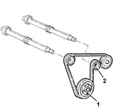
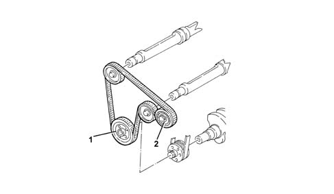

1092E counter-rotating shaft drive
- Path
- Descriptions > 10 ENGINE > 1092 VARIOUS ENGINE COMPONENT CONTROLS > 1092E counter-rotating shaft drive
- Kind
- system description
- Applies to
- all engines; all production periods
- Interactive page
- https://sloeber94.github.io/elrnDB-a156/en/#/3232867
Applies to: all engines; all production periods
Double-toothed type, controlled by drive pulley (1) fitted to the crankshaft.
There is an automatic tensioner (2) which means that there are no planned maintenance operations.

Applies to: engines: 2.0 JTS, 2.0 JTS; all production periods
CONSTRUCTION FEATURES
The counter-balance shaft drive belt is the double-toothed type, driven by the drive pulley (1) fitted on the crankshaft.
The tension is set using the tensioner (2).
